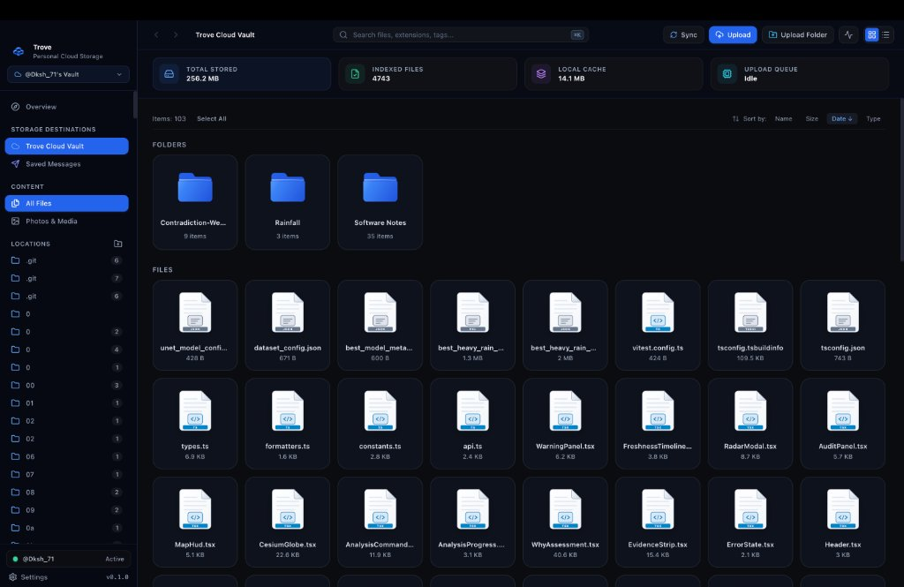

Trove transforms Telegram's global distributed network into a private, unlimited storage vault. Powered by client-side AES-256-GCM encryption, streaming chunk assembly, and a local offline metadata cache.

Non-blocking drawer with real-time transfer percentages, live chunk count, and pause/cancel controls.
Direct peer connection to Telegram's Saved Messages without passing through any intermediate proxy server.
Synchronized deletion cleans both the remote MTProto message catalog and the local SQLite database.
Download pre-compiled binaries for your system. Engineered with low battery overhead, native system integrations, and client-side encryption.
Apple Silicon (M1 / M2 / M3 / M4) · macOS 12+
Full native macOS build. Includes drag-and-drop folder uploads, background worker efficiency, and local hardware-accelerated encryption.
Windows 11 / 10 · 64-bit (x64) & ARM64
Native Windows desktop client with system tray integration, Windows Explorer context menu handlers, and DPAPI key management.
Track progress on GitHub Releases
Ubuntu, Debian, Fedora, Arch · x86_64 & aarch64
Standalone AppImage and Debian package. Headless CLI mode, systemd daemon service, and Secret Service API integration.
Build from source via GitHub Instructions
Trove combines client-side cryptographic primitives with Telegram's resilient data centers to deliver an autonomous cloud experience.
Files are encrypted locally on your machine using authenticated AES-256-GCM before transmission. Telegram's servers only receive encrypted binary chunks; your plaintext keys never touch the network.
Files of arbitrary size are cleanly sliced into 20 MB parts. Parts are uploaded through parallel streams with per-chunk SHA-256 integrity hashes and recombined automatically during download.
Download nested folder hierarchies as a single compressed ZIP file. Trove streams files directly into the ZIP archive in real time without writing temporary intermediate files to your disk.
Constructed with an event-driven scheduler that completely eliminates polling loops and busy-waits. macOS energy monitors remain quiet, leaving CPU cores cool and battery life preserved.
Every folder tree, file size, tag, and chunk location is indexed locally inside an embedded SQLite database running with Write-Ahead Logging (WAL). Directory traversal is instant.
Trove establishes direct TCP and TLS sessions with Telegram's MTProto datacenters. There are no proprietary relays, telemetry collectors, or tracking endpoints in between.
Unlike commercial sync daemons that hold your master keys on third-party servers, Trove functions strictly as an autonomous local agent.
Files are sliced into dynamic 20 MB parts. SHA-256 checksums are calculated in memory to guarantee bit-level integrity before upload.
Each chunk is encrypted with AES-256-GCM. An initialization vector (IV) and authentication tag are prepended to the ciphertext.
Encrypted payloads are sent via Telegram MTProto 2.0 RPC calls directly to your account's private storage peer.
Message IDs, chunk orders, and folder paths are committed to the local database, enabling offline exploration and instantaneous searches.
| Specification | Trove Desktop | Traditional Cloud (Drive/Dropbox) | Raw Object Storage (S3/R2) |
|---|---|---|---|
| Pricing / Subscription | $0 Free & Open Source | $10 – $30 / user / month | $0.015 / GB + API egress fees |
| Storage Capacity | Unlimited (MTProto backed) | 15 GB free tier, then hard cap | Metered per GB |
| Encryption Keys | Zero-Knowledge (Client held) | Server-Side (Vendor holds keys) | KMS / Server-Side |
| Chunking Pipeline | 20 MB parallelized slices | Proprietary block sync | Multipart upload API |
| Folder ZIP Export | On-the-fly streaming | Server spooling delay | Manual archive script needed |
| Idle CPU Consumption | < 2% (Event-driven) | 8% – 25% background polling | N/A (SDK only) |
| Offline Browsing | Local SQLite WAL index | Limited cache | No offline index |
Trove is open source and licensed under the MIT License. You can audit every line of code that handles your session, file chunks, and cipher keys.
Galois/Counter Mode guarantees both confidentiality and authentication. Any byte tampering or bit-flipping during transit or storage immediately fails the GCM tag verification, preventing corrupted files from decrypting.
Authentication uses your personal Telegram API credentials (`api_id` and `api_hash`) with phone and two-factor SMS / app verification codes. Session strings are stored encrypted on your local drive and are never sent to external servers.